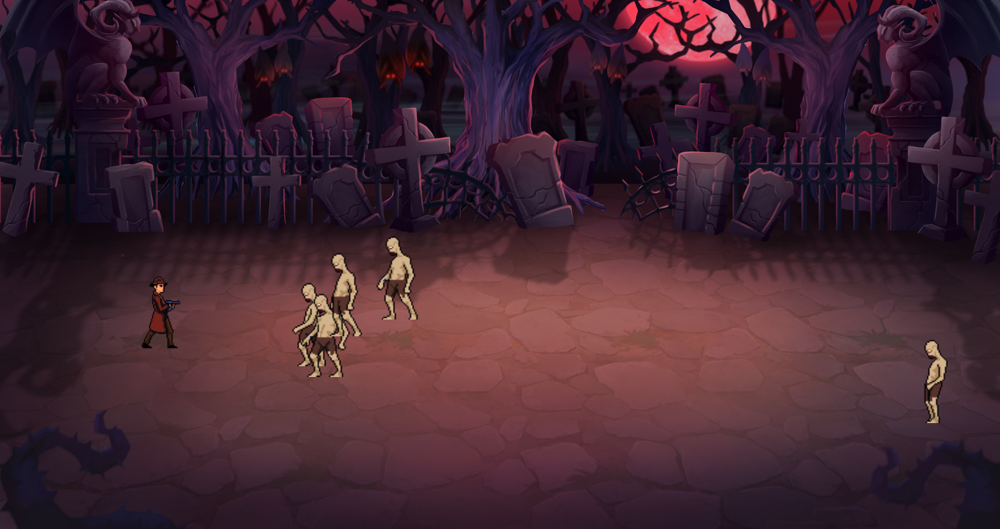

Ein interaktives Spiel von Grund auf entwickeln.
Ziel des Projekts war die Entwicklung eines vollständigen 2D-Spiels mit Gegnern, Spielsteuerung und verschiedenen Spielmechaniken.
2D-Actionspiel mit Gegnerwellen, Treffererkennung und Punktesystem. Entwickelt im Rahmen des Young Coders Programms der Developer Akademie.
Spielkonzept
JavaScript
Objektorientierung
Developer Akademie
Ziel des Projekts war die Entwicklung eines vollständigen 2D-Spiels mit Gegnern, Spielsteuerung und verschiedenen Spielmechaniken.


Das Spiel beinhaltet ein Kampfsystem, Gegnerwellen, Treffererkennung sowie die Verwaltung verschiedener Spielzustände.
Dynamisch auftauchende Gegner mit eigenem Verhalten.
Kollisionsabfragen zwischen Spieler, Projektilen und Gegnern.
Mit passender Musikunterlegung zum Spielzustand.
Tastaturbasierte Steuerung mit flüssigen Bewegungen.